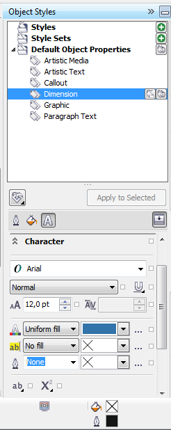

Размерные линии
Vanin / 16.05.2012, 19:10/00:41
Форум:
Не могу поменять цвет шрифта в размерных линиях в 16 Кореле, чтоб стоял
по умолчанию. Как поменять, так я знаю.
Не могу поменять цвет шрифта в размерных линиях в 16 Кореле, чтоб стоял
по умолчанию. Как поменять, так я знаю.
в стилях измени параметры стиля "фигурный текст по умолчанию"
только это повлияет на весь текст документа :(
о, в 16 теперь есть стили для размеров!
круто!

хотя никогда не пользовался - то размеры он замеряет сильно приблизительно, то шрифт мелкий или огромный, то еще какая борода
Спасибо, всем кто ответил !!!
Фигурный шрифт - установил цвет: черный, а всеравно
печатает голубым
Извиняюсь за ошибку (все равно)
у меня первый ответ для 15 был, в 16 уже по-человечески сделали, смотрите второй ответ. менять надо в "Dimension" для размерных и "Calout" для выносок. как оно в русском называется не знаю.
у меня все работает и в 15 и в 16.
Я так все и делаю. Линии: меняется цвет в какой мне надо, а вот шрифт
и в выносках, и в размерных линиях остается один-голубой. Фигурный текст (Artistik Text) цвет устновлен - черный. Глюк моего Corela ?
вы цвет меняете на закладке с буквой А или с ведром???
смотрите скриншот внимательно.
На закладке с ведром (Заливка) устанавливаю по умолчанию цвет фигурного шрифта - черный, а показывает голубой. Это можно сделать и в Инструменты/Стили объектов/Стандартные свойства объекта/фигурный Текст
Если выделить этот текст (после установки размера), на размерной линии, то цвет меняется легко, а ставится с размером - голубой, не смотря на то, что установлен, то черный, и в Стилях объектов, если посмотреть стоит черный цвет.
вы случайно в кащенко не лежали?
ЦВЕТ ТЕКСТА МЕНЯЕТСЯ В БУКВЕ!
Страницы